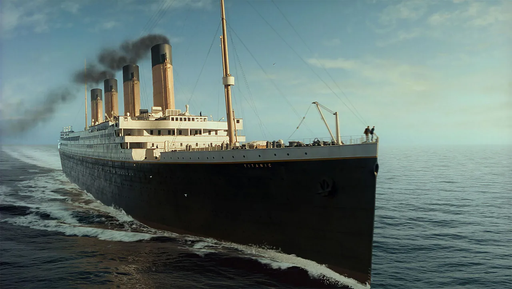
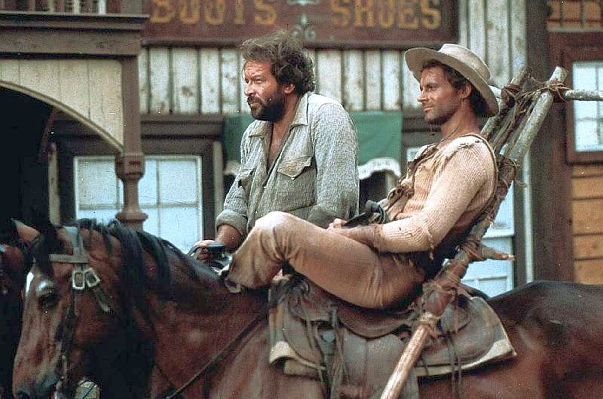
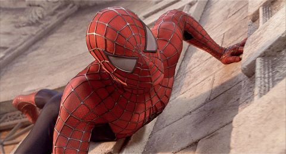
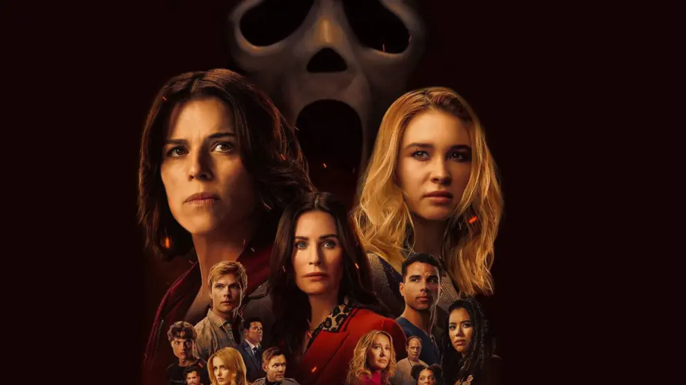

Filmek

Titanic
A Titanic 1997-ben bemutatott amerikai romantikus filmdráma és katasztrófafilm James Cameron írásában és rendezésében az elsüllyedő RMS Titanicról.
1997.

Az ördög jobb és bal keze 2
Az ördög jobb és bal keze 2. 1971-ben bemutatott olasz spagettiwestern–filmvígjáték, melyet E.B. Clucher írt és rendezett, zenéjét Guido és Maurizio de Angelis szerezte. Az ördög jobb és bal keze folytatása, a főbb szerepekben ismét Bud Spencer és Terence Hill látható.
1971.

Pókember
Pókember, valódi nevén Peter Benjamin Parker, szuperhős a Marvel Comics képregényeiben. A kitalált szereplőt Stan Lee és Steve Ditko alkotta meg.
2002.

Oppenheimer
Az Oppenheimer 2023-ban bemutatott amerikai életrajzi filmthriller, amelyet Christopher Nolan írt és rendezett az American Prometheus című könyv alapján. A címszereplőt Cillian Murphy alakítja, további fontosabb szerepekben Emily Blunt, Matt Damon, Robert Downey Jr. és Florence Pugh látható.
2023.

Sikoly 7
A Sikoly 7. 2026-ban bemutatott amerikai horrorfilm, melyet saját és Guy Busick forgatókönyvéből Kevin Williamson rendezett. A Sikoly VI. folytatása, a Sikoly filmsorozat hetedik része.
2026.
Nagyfiúk 2
A Nagyfiúk 2. 2013-ban bemutatott amerikai filmvígjáték, amelyet Dennis Dugan rendezett, a 2010-ben készült Nagyfiúk folytatásaként. A főszerepben Adam Sandler, Chris Rock, Kevin James, David Spade és Salma Hayek látható.
2013.

Interstellar
A Csillagok között 2014-ben bemutatott sci-fi film, amely felvonultatja a 21. századi elméleti fizika elképzeléseit a világűrről, a téridőről, valamint felvázolja a zsákutcába jutott emberiség lehetséges jövőjét.
2014.
Jumanji
A Jumanji 1995-ben bemutatott amerikai fantasy-kalandfilm, amelyet Chris Van Allsburg azonos című könyve alapján Joe Johnston rendezett, Jonathan Hensleigh, Greg Taylor és Jim Strain forgatókönyvéből. A film zenéjét James Horner szerezte.
1996.